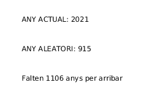
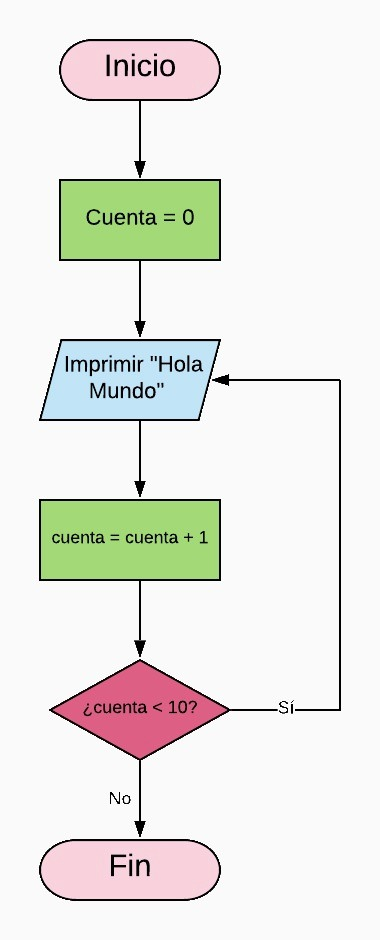
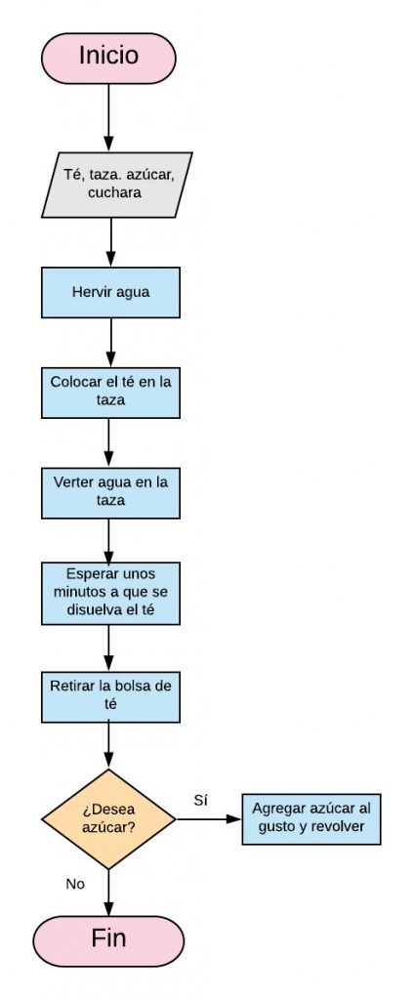
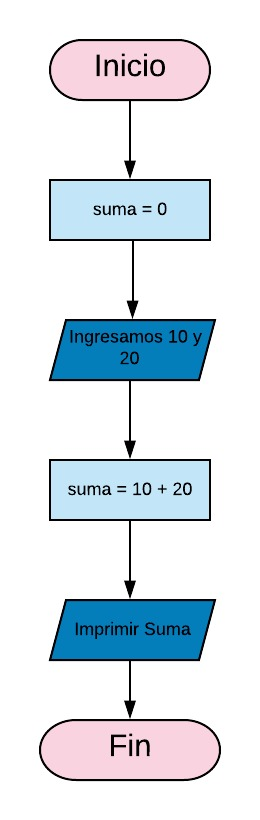
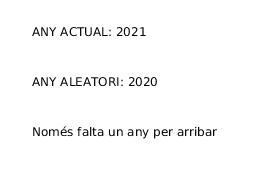
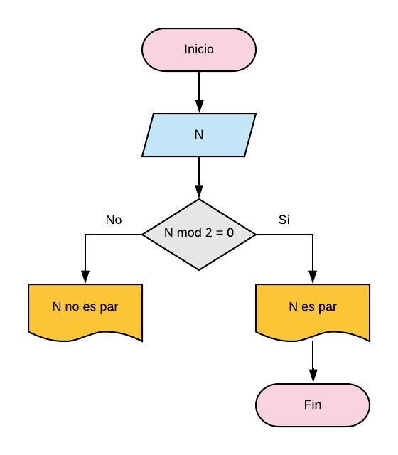
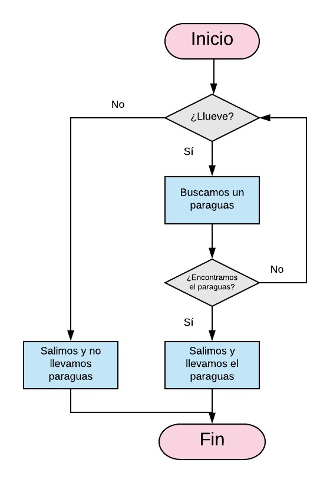
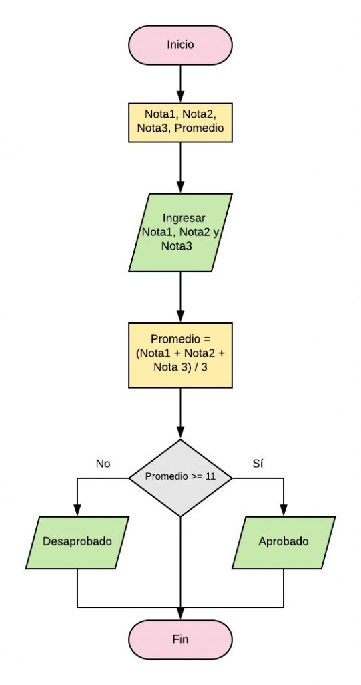

Tema 2. Programació Estructurada
Introducció
Al inici dels temps del la informàtica moderna segona meitat dels segle XX) i considerant ordinador programable aquell que seguia l'arquitectura de von Neumann, els primers programes s'escrivien en binari (llenguatge màquina) en tarjetes perforades.
Aquestes targetes perforades s'utilitzaven per escriure programes sencers amb una finalitat molt concreta. Les targetes s'utilitzaven com a entrada de dades a la màquina que s'encarregava de llegir les instruccions escrites en binari, i una a una, carregar-les a memòria i executar-les. Un problema d'aquest incipient paradigma de programació és que cada conjunt d'instruccions és específic a cada màquina.
Amb el temps i conforme augmenta la capacitat de computació dels ordinadors i també la complexitat dels programes, les targetes deixen de ser funcionals i apareixen els primers llenguatges de programació generalistes com FORTRAN, COBOL o LISP però aquestos encara no utilitzen el paradigma de programació estructurada.
A la decada dels anys 60, Böhm i Jacopini escriuen el teorema de la programació estructurada, basant-se per supost en part en aquells llenguatges de programació que ja exisitien, i arriben a la conclusió què: la sentència GOTO era una sentència considerada perjudicial per a la programació i per entendre els programes escrits en qualsevol llenguatge i també que amb només les estructures seqüencial, iterativa i condicional era suficient per escriure qualsevol programa.
En aquest tema veurem quine són les estructures de control de la programació estructurada i com s'utilitzen, així com també les seues corresponents representacions gràfiques en programes escrits en diagrames de flux, pseudocodi o algun llenguatge de programació d'alt nivell.

Conceptes bàsics
El teorema de el programa estructurat és un resultat en la teoria de llenguatges de programació. Estableix que tota funció computable pot ser implementada en un llenguatge de programació que combine només tres estructures lògiques. Aquestes tres formes també anomenades estructures de control específicament són:
- Seqüència: execució d'una instrucció després d'una altra.
- Selecció: execució d'una de dues instruccions (o conjunts), segons el valor d'una variable booleana.
- Iteració: execució d'una instrucció (o conjunt) mentre una variable booleana siga 'veritable'. Aquesta estructura lògica també es coneix com a cicle o bucle.
Aquest teorema demostra que la instrucció GOTO no és estrictament necessària i que per a tot programa que l'utilitze existeix un altre equivalent que no fa ús d'aquesta instrucció.
Els científics de la computació usualment acrediten el teorema a un article de 1966 escrit per Corrado Böhm i Giuseppe Jacopini. No obstant això, David Harel va rastrejar els seus orígens fins a la descripció de 1946 de l'arquitectura de von Neumann i el teorema de la forma normal de Kleene.
Estructures
Com ja hem anomenat als primers putns d'aquest tema, el teorema de la programació estructurada preveu una sèrie d'estrucutures bàsiques amb les quals es podríen codificar tots els algorismes sense necessitat d'usar cap sentència GOTO o similar. Aquestes estructures són: - Seqüencial - Condicional - Repetitiva
Al final tot algorisme escrit en un llenguatge de programació estrucuturada s'executa de forma seqüencial, és a dir, es llig la primera sentència s'executa i desprès passem a la següent fins arribar al final. Les estructures condicional i repetitiva es poden interpretar com estructures seqüencials amb algunes particularitats. L'estructura condicional potser s'execute o no i l'estructura repetitiva s'executara un nombre de vegades.

Estructura Seqüencial
Les ordres d'un programa s'executen per defecte en ordre seqüencial. El que significa que les instruccions s'executen, com hem comentat abans, una darrere de l'altra en el mateix ordre que apareixen escrites al programa.
L'estructura seqüencial és l'ordre natura d'execució. Les instruccions que formen part d'aquesta estructura s'executen en ordre una a continuació de l'altra. Al final de cada instrucció hi ha un punt i coma per indicar-li al compilador el final de la sentència individual. Les instruccions dintre d'una estructura seqüencial es solen agrupar en blocs ( {...} )
1 2 3 4 5 6 7 | |
Exemple d'estructura seqüencial
Un exemple d'estructura seqüencial al món real seria com li podem donar ordres a algú per tal que obriga la porta de casa
1 2 3 4 5 6 7 | |
En resum podríem dir que l'estructura seqüencial no és més que un conjunt de sentències o instruccions individuals agrupades.
Estructures de selecció
És una de les estructures que permeten modificar l'ordre d'execució de les instruccions del programa.
Una estructura condicional determina si s'executen unes accions o altres segons es compleixca o no una determinada condició.
La condició que es comprova per decidir si unes instruccions s'executen o no deu ser una expressió booleana, és a dir, ha de donar com a resultat un valor booleà true o false.
En programació estructurada ens podem trobar lse següents: - Selecció simple - Selecció doble - Selecció multiple - Operador condicional ?
Selecció Simple
És l'estructura condicional més simple en programació estructurada. S'utilitza per determinar si una instrucció o bloc d'instruccions s'executa basat en una condició. S'avalua la condició i si es true, s'executa la instrucció o bloc d'instruccions associat a la condició.

Si mirem bé la imatge anterior, el codi que s'executaria seria:
- S'executa la instrucció 1
- S'executa la instrucció 2
- S'avalua a condició
- Si s'acompleix:
- S'executa la instrucció 3
- S'executa la instruccio 4
- S'executa la instrucció 5
- S'executa la instrucció 6
En definitiva, al codi anterior podríen passar dues coses: que s'acompleixca la condició (true) o que no s'acompleixca (false). Si s'avalua true la condició el codi seria: Instrucció1, Instrucció2, Instrucció3, Instrucció4, Instrucció5 i Instrucció6.
Pel contrari si s'avalua la condició a false, les instruccions a executar serien: Instrucció1, Instrucció2, Instrucció5 i Instrucció6. És a dir, no s'executarien la 3 i la 4.
El seu codi en pseudocodi seria:
1 2 3 4 5 6 7 8 9 10 11 | |
En el primer cas si quan s'avalua la condició aquesta és veritat, s'executaria la instrucció si pel contrari la condició és falsa, no es fa res.
Al segon cas és igual que el primer però en cas d'avaluar-se possitivament la condició no s'executaria una sola instrucció si no que s'executaria (seqüencialment) el bloc d'instruccions següent: instrucció1, instrucció2 fins instruccióN.
Exemple de selecció simple
1 2 3 4 5 | |
Selecció doble
Amb aquesta estructura condicional de la programació estructurada es poden seguir camins distints depenent de si l'avaluació de la condició és true o false. En altres paraules, si la condició és true, executaria una instrucció o bloc d'instruccions mentre que si s'avalua a false executaria una altra instrucció o bloc d'instruccions.

El codi en pseudocodi seria
1 2 3 4 5 6 7 8 9 10 11 | |
Si ens fixem en el codi anterior, podem trobar dues seqüències d'execucio d'instruccions depenenet si la condició del 'si' s'avalua 'veritable' o 'fals'. En el primer cas, amb la condició a veritat, s'executarien: instrucció1, instrucció2, instrucció3, instrucció4, instrucció7 i instrucció8. Mentre que si la condició del 'si' s'avaluara a 'fals', les instruccions a executar serien: instrucció1, instrucció2, instrucció5, instrucció6, instrucció7 i instrucció8.
Exemple de selecció doble
1 2 3 4 5 6 7 | |
Condicinals niats
Si volem avaluar més d'una condició al nostre codi, estariem parlant d'una estructura condicional múltiple que bàsicament consisteix en encadenar varios if..else. A continuació es pot veure com seria un exemple de condicional múltiple en diagrama de flux.

El mateix exemple en pseudocodi que teniu a la imatge anterior seria:
1 2 3 4 5 6 7 8 9 10 11 12 13 14 15 16 17 18 | |
Exemple d'estructura condicional niada
Un repatidor de Mirinda segueix el següent horari de feina: el dilluns reparteix a Pego, el dimarts a Oliva, el dimecres a Ondara, el dijous a El Verger i el divendres a Els poblets. Al següent algorisme s'explica:
1 2 3 4 5 6 7 8 9 10 11 12 13 14 15 16 17 18 19 20 | |
Condicional múltiple
La sentència de control 'switch' és una altra forma de codificar la condició mùltiple que hem vist a l'apartat anterior però més senzilla de visualitzar a primer cop d'ull

1 2 3 4 5 6 7 8 9 10 11 12 13 | |
L'exemple del repartidor ens serveriria per veure aquesta estructura
1 2 3 4 5 6 7 8 9 10 11 12 13 14 15 16 17 18 19 20 21 22 | |
Estructures de repetició
Si les estructures condicionals serveixen per determinar quines instruccions o bloc d'instruccions s'executen, la programació estructurada també disposa d'estrutctures repetitives o també anomenades bucles, que ens permeten executar una instrucció o bloc d'instruccions diverses vegades.
mentre
Mentre la condició (també anomenada condició d'eixida) siga avaluada com a true, s'executaríen les instruccions que hi ha dins del bucle while.

En aquest tipus de bucle, el bloc d'instruccions del bucle while, es poden executar zero o més vegades.
Els passos que representen el diagrama anterior són: 1. S'executa la instrucció 1 2. S'avalua la condició 3. Si la condició és true, s'executa el bloc d'instruccions del bucle i es torna a avaluar la condició. 4. En cas que la condició s'avalue com a false, passaríem a executar la instrucció 2.
Exemple: Com faríem el codi necessari per recòrrer el nostre array de 100 elements fins trobar el número que busquem?
1 2 3 4 | |
repetir .. mentre
Molt semblant al bucle while però amb la diferència que el bloc s'instruccions que conté l'estructura s'executaria almenys una vegada ja que la condició d'eixida s'avalua després d'executar les instruccions.

Els passos que representen el diagrama anterior són: 1. S'executa la instrucció 1 2. S'executen les instruccions que conté el bloc 3. S'avalua la condició 4. Si la condició és true, s'executa el bloc d'instruccions del bucle i es torna a avaluar la condició. 5. En cas que la condició s'avalue com a false, passaríem a executar la instrucció 2.
Exemple: Com faríem el codi necessari per recòrrer el nostre array de 100 elements fins trobar el número que busquem?
1 2 3 4 | |
bucle per
La més complicada de comprendre però també possiblement la més utilitzada. Mirem un exemple.

- Executem instrucció 1 (aliena al bucle for)
- Inicialització
- Avaluació de la condició
- Si la condició és true
- Executem les instruccions del bucle for
- Actualitzem índex
- Si la condició es false eixim del bucle i executem instrucció 2
1 2 3 4 | |
Activitats
Exposem a continació algunes activitats per tal d'assolir els coneixements exposats als punts anteriors.
Actiivtat 1. Iniciar sessió a Facebook Dibuixa un diagrama de flux per iniciar sessió en un compte de Facebook. 1. Obrim el navegador web. 2. Escrivim facebook.com 3. Aquesta solicitud s'envia a Facebook i respon enviant-nos a la pàgina d'inici o login. 4. Escrivim les nostres credencials, email i contrasenya i fem clic a inciar. 5. Si es correcte es mostrarà la pàgina del nostre perfil. En cas contrari, es produirà un error i ens demanarà una altra vegada usuari i contrasenya.
Solució

Activitat 2. Àrea d'un rectangle Calcula l'area d'un rectangle donades les seues dimensions  1. Inserim la base. 2. Especifiquem l'alçada. 3. Calculem l'àrea: base x alçada 4. Mostrem el resultat per pantalla.
Solució

Activitat 3. Hola món 10 vegades Escriu el diagrama de flux necessari per imprimr per pantalla 10 vegades "hola món" Resolem aquesta activitat utilitzant el concepte bucle. Creem la variable "cuenta" i l'incialitzem a 0. Després imprimim "Hola món" i incrementem la variable "cuenta" en uno. Verifiquem si "cuenta" encara és menor que 10. En cas veritable, imprimim "Hola món" i tornem a incrementar. Quan la "cuenta" valga 10 eixim del programa. 1. Cuneta = 0; 2. Imprimir "Hola món" 3. Incrementem cuenta 4. Si cuenta < 10 tornem al pas 2 en cas contrari s'acaba l'execucuió
Solució

Activitat 4. Preparar el té Dibuixa el diagrama de flux amb els passos necessaris per preparar el té. 1. Comprar té i/o sucre. 2. Tindre tassa i cullera. 3. Posar a bollir aigua. 4. Posar la bossa de té a la tassa. 5. Posar aigua a la tassa amb la bossa (de té). 6. Esperar uns minuts a que es disolga el té. 7. Retirar la bossa (de té) 8. Vols sucre? Si la resposta és sí, posar sucre i remenejar. Si la resposta és no s'acabat el procés.
Solució

Activitat 5. Número major Escriu el diagrama de flux de tal forma que donats dos números ens indique quin és més gran. 1. Introudir els valors A i B 2. Llegir els seus valors 3. Si A == B tornar al pas 1 4. Si A > B escriure per pantalla: "A és major que B" 5. En cas contrari escriure: "B és major que A". 6. Acabar el procés,
Solució

Activitat 6. Suma dos números Algorisme que demana dos números i els suma mostrant el resultat per pantalla. 1. Declarem la variable **suma** i la inicialitzem a 0. 2. Inserim dos números. 3. Sumem els dos números i els afegim a suma. 4. Mostrem suma per pantalla.
Solució

Activitat 7. Llevar la fam Ens trobem a casa i tenim fam. Què fem? 1. Preguntem si tenim fam. 2. Si la resposta és no s'acaba el procediment, ja estem satisfets. 3. Si la resposta és si busquem el menjar a la nevera. 4. Si hi ha menjar a la nevera la calfem i mengem 5. Si no hi ha res a la nevera, eixim de compres i tornem, preparem algo i mengem.
Solució

Activitat 8. Par o impar Algorisme que determina si el número que inserim és parell o senar. 1. Introduim un número 'N' 2. Si 'N' es divideix entre 2 i el residu és 0 (N mod 2 = 0), aleshores 'N' és parell. 3. En cas contrari és senar.
Solució

Activitat 9. Agafar el paraigües Algorisme per determinar quan ixc de casa si necessite o no agafar un paraigües. 1. Comprovem si està plovent. 2. Si la resposta és No, eixim al carrer sense paraigües. 3. Si la resposta és Sí, busquem el paraigües 4. Si el trobem eixim al carrer 5. En cas contrari tornem al pas 1.
Solució

Activitat 10. Mitjana Algorisme que calcula la mitjana d'un alumne amb tres notes i mostra per pantalla si està "Aprovat" o "Suspés". La nota mínima per aprovar és 11. 1. Declarem les variables a utilitzar: Nota1, Nota2, Nota3, Mitjana. 2. Inserim les notes per teclat. 3. Calculem la mitjana 4. Verifiquem si la mitjana és major o igual a 11. 5. Si és major que 11, escrivim per pantalla "Aprovat" 6. En cas contrari escrivim "Suspés"
Solució
